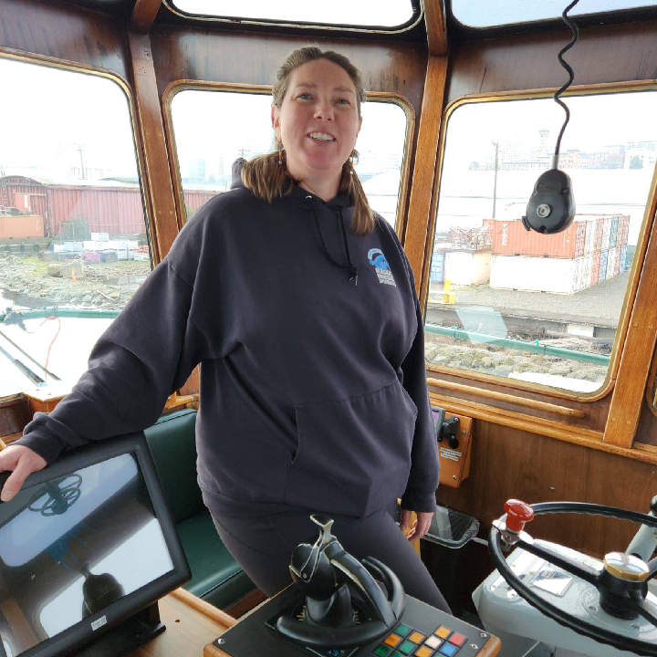
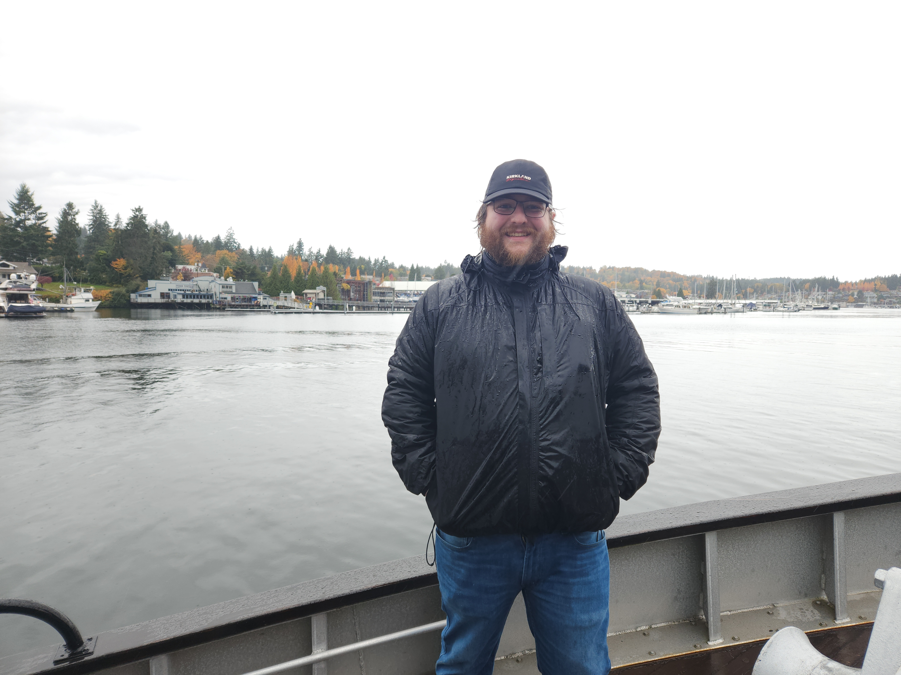
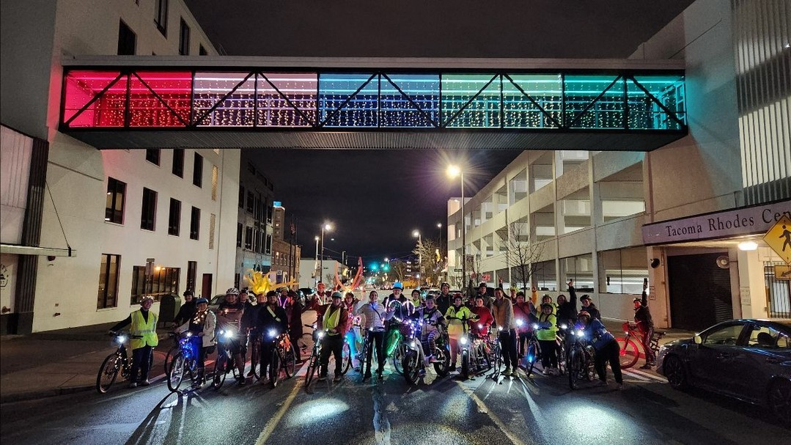
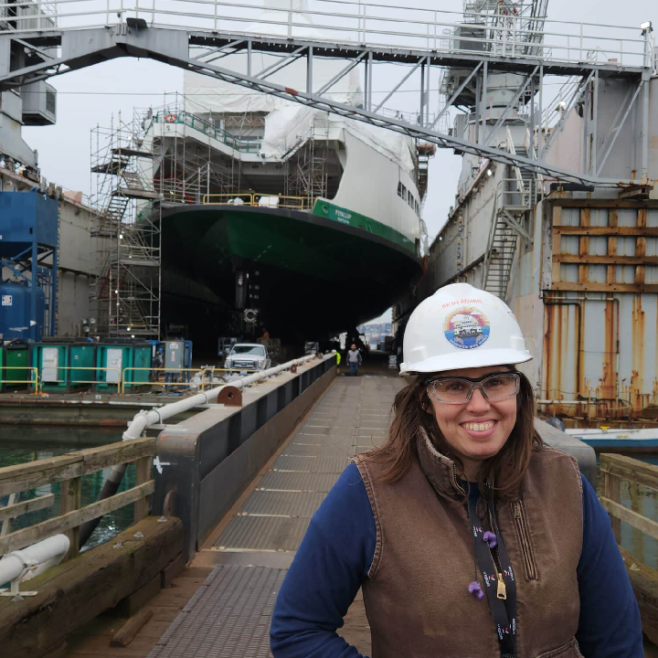
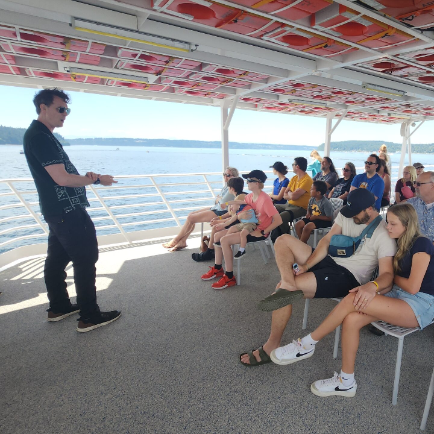
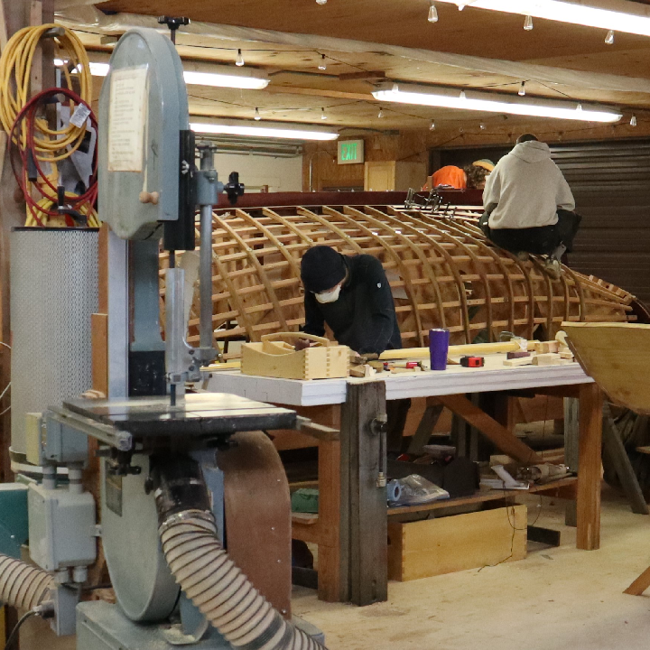
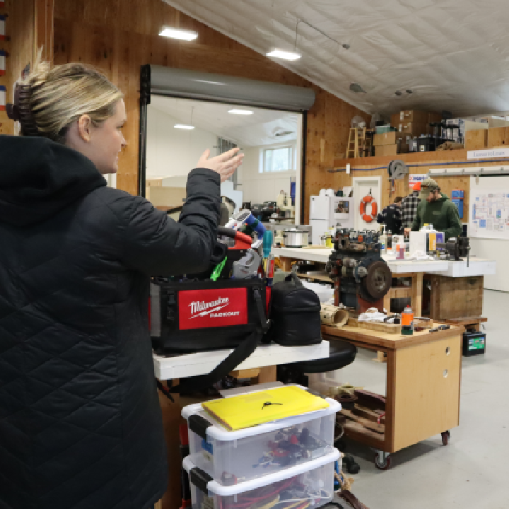
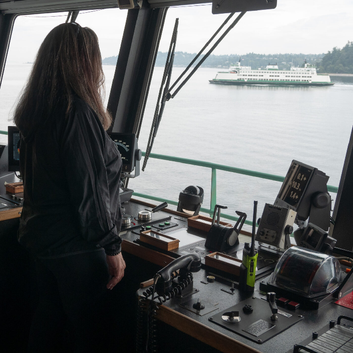
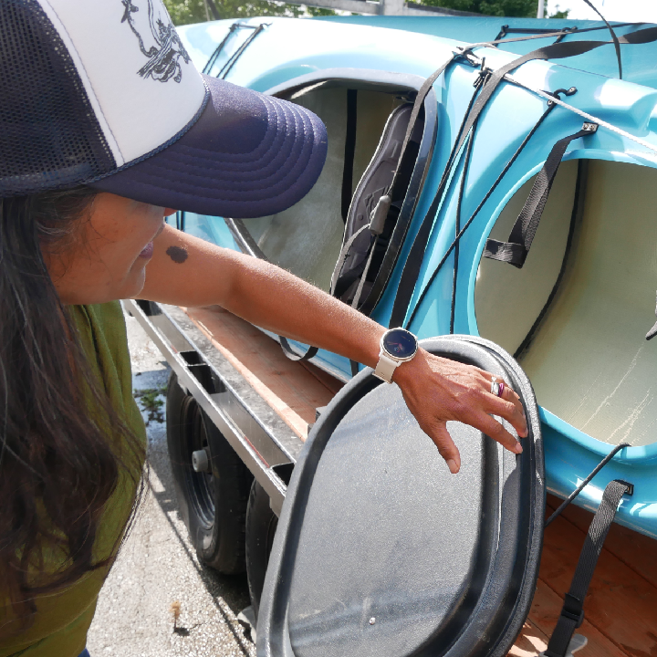

{kind=link}

Captain Katrina Anderson
Captain Anderson is a ferry pilot in Tacoma, and a participant in the Women on the Waterfront story series.
With the Maritime Washington National Heritage Area I authored more than 60 nonfiction narratives and created multimedia content to promote the cultural and historical significance of Washington State's maritime heritage.
My work with long form storytelling, short form social media management / marketing, and multimedia project management supported community engagement, tourism, and educational initiatives, contributing to the preservation and celebration of the region's rich maritime history.
I was also awarded by the City of Tacoma Landmarks Preservation Commission for the "Women on the Waterfront" story series.

During my time with Downtown: On the Go, I directed external communications and grant writing to enhance public awareness of transportation alternatives in Tacoma. I led financial resource development and orchestrated successful fundraising campaigns to support sustainable urban mobility.

Led and mentored a team of editors in the production of a high-circulation environmental magazine while managing budgets to triple the standard print run for the magazine’s 50th-anniversary issue and mentored student journalists on advanced writing techniques and environmental best practices.
Expertise in translating complex data into compelling human narratives using modern digital tools.
Photography, Videography, and Audio Production specialized for digital platforms.
Public Relations, Media Outreach, and Strategic Communications Campaign Development.
Adobe Creative Suite (Premiere, Photoshop, InDesign) and WordPress Management.
Environmental Advocacy, Social Justice, and Salish Sea Heritage.
Strategic social media management and multimedia storytelling designed to grow and sustain diverse public audiences through ethical, data-driven narratives.
Cultivating strategic relationships with Tribal entities, government agencies, and businesses to launch innovative regional projects and heritage initiatives.

Captain Anderson is a ferry pilot in Tacoma, and a participant in the Women on the Waterfront story series.

Beth Adams is a chief engineer aboard the M/V Puyallup, and a participant in the Women on the Waterfront story series.

Chris Staundinger, owner of Pretty Gritty Tours, leads an on-the-water history tour for Family Day on the Foss.

Students at the Northwest School of Wooden Boatbuilding work on their project during a site visit for a Partner Profile.

Christina lead a walkthrough of the marine systems workshop as part of a site visit for a Partner Profile.

Michele Allen is the first relief chief mate for Washington State Ferries, and a participant in the Women on the Waterfront series.

Megan Schorr is a co-owner of Anacortes Kayak Tours, a 22-year old small business, and a participant in the Women on the Waterfront series.
With a B.A. in Environmental Studies and Journalism from Western Washington University, I focus on translating technical environmental and social issues into compelling human stories. Based in the Pacific Northwest, my work is rooted in the heritage of the Salish Sea and a commitment to fostering inclusive audience engagement.
{kind=link}
{kind=link}
{kind=link}
{kind=link}
{kind=link}
{kind=link}